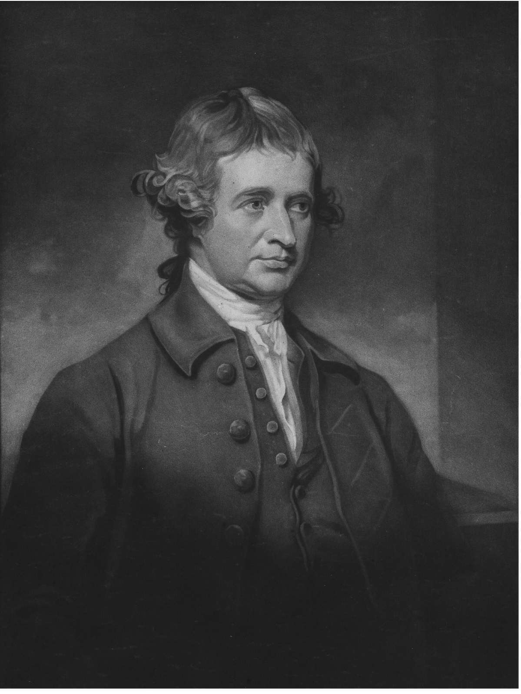

托克维尔的第二部伟大著作《旧制度与大革命》出版于1856年。他在这本书中考察了法国君主制这一“旧制度”，但未谈及大革命，到1859年他去世之时，这本书尚未完成。他以法国大革命为着眼点来研究旧制度——因为它替大革命铺平了道路。旧制度实施的是理性主义行政制度（我们或许可以称之为精英政府），在20个世代的时间里渐次走向了自我毁灭。在托克维尔的概念里，理性主义行政是民主制度的对立面，也就是我们在《论美国的民主》一书中看到的集权管理。
在这本后期的著作中，托克维尔详细论述了大政府的含义和执政手段。他揭示了它不仅是民主制度的敌人们唤起的一幅可怕的未来场景，而且是真实发生在法国的历史事实。法国的君主政体从未打算建立一个民主国家，但它却完成了民主制度的任务。法国的几位国王及其伟大的大臣黎塞留和马扎然枢机主教通过逐渐废除贵族成员掌管各自领地事务的封建制度，先是铲除了所有公民之间的差别，继而在一个中央集权现代国家的非封建等级阶层中重新安排他们的地位：如今的法国人就生活在这样一个等级阶序中——所有民主国家的人民均是如此，只是程度不同而已。
1789年发生在法国的民主革命是历代法国国王的政策和不作为的法国贵族始料未及的重大后果，两者合力使法国走向了现代化，但这并非其本意。法国的民主制度是君主制凭借其本身的基本策略——与反对贵族的人民结盟——在突然发生的暴力革命中走向毁灭。它的政治策略与“文人们”通过理性主义行政来实施改革的计划日渐谋合。这些崇尚理论的改革者本质上都是厌恶政治的人，但他们赞成君主制，视之为改革依赖的手段，而拒绝民主制度，称其庸俗、无知、反对改革。因此，民主制度是君主制和改革者这两股力量结盟造就的结果，两者都反对民主，让它们联合起来的只是对贵族制度共同的敌意。反对充满特权和偏见的封建制度这一人类理性的伟大进步——哲学家黑格尔将其诠释为人对自身主权思想的终极主张——其发生竟纯属意外，是各方都没有预见到的结果。这就是托克维尔在《旧制度与大革命》中震惊四座的精彩论调。
托克维尔在1850年底致友人路易·凯尔戈莱的信中，首次提到了撰写这本书的想法，说它是对“法国大革命这出长剧”的研究。两年后，他谈到自己1842年在法兰西学术院的演讲中，抨击拿破仑的影响是世界历史上“最全面的专制”，同时也谴责了大革命背后的抽象观念。这两点表明了他即将探究的大革命的结果和起源。更早的1836年，当他还沉浸在《论美国的民主》上卷出版带来的成功中时，就曾应约翰·斯图尔特·密尔之邀，写了一篇关于1789年之前和之后的法国的文章，发表在密尔主编的《伦敦和威斯敏斯特评论》上。从1850年最初构想此书，他逐渐转移关注焦点，从拿破仑回溯到（大革命之后的）督政府时期，再到旧制度，并最终于1853年8月选定了后者。
托克维尔于1852年1月着手写作前的准备工作，开始阅读回忆录并记录笔记。1853年6月，他觉得有必要查阅旧制度的档案，就在图尔市 [1] 花了一年的时间仔细研究主要官员 ——总督（Intendants） ——执政期间的记录。最终写成的《旧制度与大革命》文笔优雅、气势恢宏，几乎完全掩盖了背后那些阅读书籍和时事刊物、在尘封的档案中挖掘历史的辛劳。罗伯特·甘尼特在《揭秘托克维尔》（2003）这部杰作中，向我们展示了托克维尔为写作收集的论据，议论了他的“隐秘模式”。托克维尔的很多注释和引文主要用作例证，往往不标记出处。同时，他还经常提醒读者注意他所做的研究，那口气几乎是在自夸，仿佛是在挑战读者，看有谁敢在无人指引的情况下自行探究一番。
托克维尔在开篇称这部著作为“研究”。但这是哪一种研究呢？与《论美国的民主》相比，它是更直接的历史研究，《论美国的民主》开篇便讨论“天意命定的事实”，即朝着越来越民主的方向发展的上升趋势，其论证的前提是人们可以实实在在地在美国看到民主的形象。在该书的末尾，托克维尔提出了温和专制的幽灵，但那是从人民的立场上来展现，解释了他们为什么会欢迎大政府令人窒息的拥抱，还描述了美国人针对它所践行的补救措施。他因而宣称，无论民主有何缺点，他都负责任地接受民主；他断言在民主的时代，没有其他道路可走，此外民主制度也显得比贵族制度更加公正。《旧制度与大革命》则是从国王和贵族的立场审视同样的专制，这一次他称之为“民主的专制”。国王和贵族们促成了一个双方都不想要的民主制度，伴随着一场任何人都毫无准备的革命带来的恐怖暴力加诸其身。本书着重哀叹了贵族制度的失败，最终形成了这样一个“国家”，其公民思想矛盾、行为混乱，充满了愤怒或恐惧。这本著作详述了国王们战略上的贪婪和贵族们毫无作为的克制，而法国社会只有上述两方的腐败乱政和得意自满未曾触及的那些领域，还有些值得他赞扬的东西。
这两部著作都是向法国及全体人类提供建议，在这个意义上，它们都是政治文本；但在《旧制度与大革命》中，作者满怀义愤，丝毫没有体现出《论美国的民主》中非凡的冷静客观。与其说他对大革命满腔怒火，不如说他对其所取代的旧君主制度切齿愤盈，而与其说他怒君主制度之不争，不如说他痛恨君主制和革命在拿破仑专制时期的双双登场。只要看到拿破仑统治的结果是他的侄子路易·拿破仑所建帝国的世俗平庸，便可得出这一结论。
《旧制度与大革命》被巧妙地称为“政治史”，因为它将政治评判和历史结合起来，既避免了论争，也没有将科学的客观性贬得一文不值。但这些只是形式上的差别，并非本质差异。在《论美国的民主》中，托克维尔表达了对政治自由要求的深切关注，《旧制度与大革命》当视为将同样的关怀和忧虑倾注在法国。虽然在前一本书中，他开头便讨论了民主的趋势乃天意使然，不管其是否对自由有利，但在本书的前言中，他承认自己为自由激烈辩护，也为捍卫自由而支持它所释放的那些更加高尚和强烈的激情。在本书正文中，他的研究解释了他何以如此热爱自由，因为事实证明，政治和自由是密不可分的，在君主制度下丧失了政治自由必然会导致法国彻底丧失自由。在《旧制度与大革命》一书中，他论述了两个在《论美国的民主》中未能全面展开的政治学观点：一是政治自由的贵族根源，一是理性主义行政对自由的危险。但我们还是先来看看《旧制度与大革命》的主要历史课题是什么。
法国的革命者认为自己完成了与过去的彻底决裂。他们试图把自己国家的命运切割成互不相干的两段，1789年之前和1789年之后，并相信他们成功地做到了这一点。与其背道而驰的反革命主义者竟然也持有同样的信念。在《旧制度与大革命》中，托克维尔自始至终选用埃德蒙·柏克的观点来突出自己的见解，这位伟大的英国政治家和哲学家认为，法国大革命是史上“第一次彻底的革命”。这是一场情感、风俗和道德见解的革命，“甚至触及人类精神的建构”。托克维尔反对革命正反双方达成的共识，他主张大革命的起源是它即将毁灭的社会，它是法国君主制的旧制度的杰作，后者一直倾向于故意而又大体上无知无觉地自我毁灭。大革命不仅发生于1789年巴士底狱的陷落；早在1439（或1444）年查理七世未经贵族同意便下令征收新税时，大革命便已开始。
但托克维尔并不否认发生了巨大的变化。他否认的是这场大革命的发生是人类意图支配的，认为它既没有顺应革命者的意志，也没有违背反对者的意愿。在《论美国的民主》中，他谴责了民主历史学家否认人类意图对历史发展的作用，但关于民主的到来，他们的见解倒是正确的。书名“旧制度与大革命”体现了变化之巨，却没有言明这是法国的大革命。（托克维尔担心书名的问题，看来就在出版之前临时删去或同意删去了这个形容词。）他同意如柏克所说，大革命是彻底的，并且像美国革命一样，被宣扬到其他国家，得到了全人类的关注。大革命不会反复发生，也不会被未来的革命所抵消，实际上，它原本就是为了完成此前所有的革命，那些革命均不彻底，因而需要更加深入的革命才能重建往日的荣光。他所主张的是，这一巨变已经延续了好几个世纪；它是新的革命，但不是最近才发生的，因而不该令人觉得突然。在他的书中，托克维尔列举了促成大革命的行动，但它们的整体意义却没有引起所有人的注意。1789年后，其意义又被革命者的自吹自擂及其敌人的公开谴责掩盖了。

图8 英国政治家和哲学家埃德蒙·柏克。在《旧制度与大革命》中，托克维尔把柏克和自己对法国大革命的分析进行了对比
能够从震惊中恢复过来的大革命的评论者们大都认为，发动革命本是为了摧毁宗教、引发混乱或至少削弱政治权力。柏克就是这种观点的一个突出代表，他集中火力攻击大革命发起者们的无神论思想，认为他们消除了人们对神灵的信仰而彻底改变了人类，从而否定了政府的神授权力，削弱了政府。在托克维尔看来，这是错把一次意外当成了根本性的原因。教会或许是旧制度中最有权力的部分；它妨碍了改革，为了建立一个新秩序来替代旧制度，就必须对它进行制度和信仰两方面的攻击。这种新秩序——而不是摧毁教会——才是根本目标，并且新秩序一定要比旧秩序更强大，而不是更虚弱。法国无意将自己撕成碎片，事实上，它后来还组建了前所未有的强大军队，也造就了一种全新的、信仰“至高存在”（Supreme Being）的革命性宗教，它希望这种宗教比基督教更加权威。托克维尔在本书后面部分说，法国大革命要比此前任何其他事件更像是“宗教改革”，它满心指望自己也能够得到像基督教提供给旧制度那样的支持，最好还能收获更大的热情。就像在《论美国的民主》中一样，托克维尔希望读者明白，宗教和自由之间不存在必然的对抗，甚至在人为的宗教和大革命所带来的虚假自由之间也是如此。
至于为什么法国大革命是第一次攻击旧制度，并以一种新宗教自居的革命，托克维尔并未直接言明。显然，它的思想依据更易被更多的人接受，以至于在某一特定的节点，这个理论看似可行。作为超过了此前所有革命的一次彻底的革命，法国大革命所依凭的观念并不比此前的任何革命思想更加真实，而只是突然看来可行，而旧制度却突然间难以为继了。旧制度是封建制度，托克维尔会说，封建制度经过一段时间的发展，看起来就不再是个能够维持运转的稳定连贯的整体。如今美国人或许会说，它在那个时间点上就不再实用了。托克维尔在他的政治史中反对革命思想家们试图在实践前先行制定理论。他并不试图评判支持和攻击封建制度的两方意见谁对谁错，而是考察了封建制度能否构成一个整体，成为某种观念、某种合乎理性的理论的主体。正如他曾在第一部著作中通过研究美国人的实践发现了民主的形象，在这部著作中，他也考察了旧制度的实践，为的是看看它是否连贯。
起初，封建制度是由孤立生存的野蛮部落组成的无序状态，但随后出现了独特的日耳曼法；该法律并非源自罗马法系，而是一种独创，形成了“由各部分组成的一个整体”，它们之间就像现代法典那样联系密切，是供半野蛮的社会使用的圣人法。托克维尔没有说明封建制度中精心设计的特权和责任等级是如何产生的；他只是说，该法典和等级在全欧各地几乎都一样，没有什么明确的原因，仿佛是随意自生、自然发展而成的。这才是真正的旧制度，而18世纪的法国不是，真正的革命所推翻的也正是这个。真正的革命是法国君主制的中央集权，也就是人们如今常用的“旧制度”和“法国大革命”这两个术语所表示的基本制度。
何为中央集权？考察一下前文提及的查理七世采取的第一步，我们就可以看到国王在未经贵族同意的情况下获得了征税的权力，作为交换，对贵族免征税赋。托克维尔说，出于贪婪，贵族把自己的政治权力出卖给了国王。但除此以外，国王一方有着“让每一个政府都希望自行领导一切事务的本能，无论政府的行为主体是什么，这种本能始终存在” 。这一动机超越了贪婪的偶然性，因为它永远在引诱任何政府从产生于政府之外的任何社团中攫取权力。若干个世纪以来，贵族在君主面前节节败退，不断丧失被征求意见和统治其领地的权力，而君主逐渐学会了通过总督来治理国家，总督是国王的代理人，是受国王的大臣们从中央指挥的行政官员。
总督变成了旧制度特有的官员（此时它已经变成了旧制度），他们是择优选拔出来的，并发展出一套“创造一千种控制手段”的技能。他们来自中产阶级，因为贵族不屑于如此低级和从属的境遇，宁愿在朝廷上为争得国王的欢心而勾心斗角。总督们对其所行之事和努力尝试都保留了仔细的记录，托克维尔在巴黎的档案堆中仔细研究了那些记录。这些行政人员是“新社会的贵族”，他称呼他们为公务员（fonctionnaires）。和现代官僚一样（他在注释中写了一句话贬低那个“现代套话”），他们偏爱统计数字和会计账目。为显示自己的人性，他们从满是数据的纸堆里抬起眼睛，抱怨农民懒惰倔强，那些农民几乎从不听从他们的建议或接受他们的指导。18世纪，他们甚至还曾染上了某种狄德罗式和卢梭式的“虚假的多愁善感”，此举试图缓解那种整日淹没在账目中的枯燥乏味，很像是如今管理心理学治疗中的宣泄。托克维尔讲了一个负责政府慈善项目的总审计长的故事，这个项目负责提供基金，各教区的居民也必须捐献一定的金额来匹配。当他们捐献的金额充足时，总审计长便在分派清单边上写道：好，表示满意；而当份额特别巨大时，他写道：好，表示满意和感动。
从这件趣事可以看到，旧制度的中央集权制既不严酷也不暴虐。随着它越来越复杂和广泛，它也日益规范、开明和温和。“压迫少，疏导多。”这正是托克维尔在《论美国的民主》中警告过的温和的专制。它亲切宽厚而助益良多，发挥着监护性而非恶意的力量。它假装教给农民们“致富的艺术”，却很少分发有关农业技术的著述。托克维尔认为，这就是法国后来所谓“行政监护”（la tutelle administrative）的起源——意指像监护人那样无微不至，像导师一般循循善诱。如今的美国人大概会认为美国农业部发挥着同样的作用。当时的问题（或许现在也一样）在于政府承诺的改进超出了它力所能及，人民因而不再信任政府，新方法原本应有的合理性变得荒谬可笑，所有的法国人都受到监护，被剥夺了自治的好处。在这种情况下，政府常常犹豫不决，失去了勇气；因此，旧制度总是依照僵化的规则管理人民，执法懈怠，又被各种特权和豁免弄得愈发弛惰。
巴黎是这个行政国家的中心，它的主权优势超过了法国其他各地，是中央集权的象征。尽管国王们一直试图遏制这座城市的发展，巴黎的规模还是逐年扩大。随着各省的公共生活和本地自由的消失，巴黎变成了唯一的权力中心，也随之成为风格和品位的裁判者。由于对巴黎的管制不像各省那样束缚手脚，那里的工业规模也在不断增长。大革命一到来，便发生在巴黎，这座都城决定了整个法国的命运——以至于旧的君主制之所以那般突然而猛烈地崩溃，巴黎的主导地位是诸多主要原因之一。
这些就是中央集权制的主要特性。托克维尔坚称，其总体的结果相当于废除了政治而代之以行政管理，这也适时地变成了政府的意图。法国君主的行政管理始于国王们和贵族的贪婪，随后发展成为所有政府共有之本能的结果，最终表现为一场翻天覆地的变化 ——那确实是政治史上的一场革命，即使没有事先筹划。这种新型政府取代了“天意”；每个人作为个人，而不再是封建制度中的某个阶级的一员，跟政府建立直接的关系。它们很像是当前福利国家的权利，同样是绕过一切中间群体，从政府直接发放到个人手中的权益。这意味着个人只仰赖政府，仿佛向上帝祷告那样，而不再依赖他的家庭或自己在封建阶级中的地位。政府和个人之间没有了“次级权力”，这种次级权力本可以为了捍卫作为某个群体成员的个人 ——例如贵族或仰仗贵族的农奴 ——的权利和特权，而与中央权力机构抗衡。没有像托克维尔在美国看到的那种社团，通过对权力机构加以制约来行使相当于贵族制中的贵族的功能，奇怪的是，这种制约关系竟有点像中世纪的封建秩序，其中国王的权力受到限制，暴政也能够有效预防。
随着君主制度的发展，法国的贵族日渐衰落，他们像国王一样贪婪，却比后者更加短视。起初，贵族们在征税时出卖自己同意征税的权利来换取免税的特权，后来有些税赋是向所有的人征收的，但对贵族仍有所减免。这就造成了这样一种局面：富人们不用交税，因而对他们不再提供帮助的人也就丧失了责任感。与此同时，他们也失去了大量财富，因为国王开始出卖朝廷的官职给他们；贵族们愚蠢地珍视其宫廷生涯的荣誉，认为那比统治属民的快乐和责任更加宝贵。因为需要更多的钱，他们向农奴出售其领地，农奴变成了拥有土地的农民，如此便有责任缴纳贵族免于缴纳的税赋。由于君主制揽下了一切责任，它也总是缺钱，财政上的权宜之计层出不穷。其目的并非通过税赋蓄意削弱贵族的力量，托克维尔说，接下来的政策不是哪一个国王制定的，而是制度使然。但在事实上如此削弱贵族以至于贵族的特权看来像是无本之木，这是毫无理性的行为，因为当大革命到来之际，贵族不但无法自卫，也无力保护君主制。君主制的政策实际上不是个周密的策略，而是让野心和贪婪不受节制，在冷酷的中央集权中成为定规，这看似让政府更加理性，实际上却完全相反。君主制没有意识到，它的反贵族政策会把贵族变成享有特权的世袭阶级，而不是运作良好的上层阶级 ——托克维尔坚信这是有重大区别的。它没有看到它的政策实际上是民主的，并有可能真正走向民主制度。
托克维尔的讨论是围绕着贵族展开的，但他充分、完整地向我们展示了旧制度的各个方面，对模仿贵族的中产阶级、仇恨贵族的农民，以及不支持贵族的神职人员都评述了一番。他承认法国的贵族尽管腐朽，却仍然保持着骄傲，并且因为有“充满阳刚之气的美德”，他们既不奴颜婢膝，也未沉溺于在他的年代盛行一时的对物质富足的阴柔之爱。贵族们秉持着自古以来对国王的忠诚，能够声称他们的灵魂是自由的——他说，现代的头脑几乎已经无法理解这一事实了。他们表现出一种伟大，但没有政治自由。他们为其效劳的国王并不残酷，反而相当温和；他们为了法国的利益竭尽所能，只有在习焉不察之时才会踩到别人头上。因为对政治自由充满敌意，他们自毁前程，丧失了学习所行之事的机会。
之所以对论证进行这样一番调整，托克维尔是希望即使在批评之后，还能为他的时代留下正面形象的贵族典范，他们足以启迪或羞辱那些让路易·拿破仑掌握了权力的选民。但他也抨击了柏克，后者认为如果法国贵族经历过改革，他们在大革命之时仍然可以独当一面。有人会为柏克辩护，说他的动机和托克维尔一样，是在更高层面上赞扬法国的贵族。柏克认为英国贵族在他的时代仍然存在，而他不想对贵族的生存能力有所非议；他撰写《法国革命论》一书的目的，就是要铲除英国对法国大革命的同情，抑制英国激进分子想要在海峡这一端发起革命的欲望。柏克当然不会想要支持托克维尔关于民主的新世界无法阻挡的看法，他也没有这样做。但于他而言也是同样的情形，一如他的名言所示，“骑士的时代一去不返”，再也回不到那个贵族们挺身而出为玛丽·安托瓦内特 [2] 辩护的时代了。在他自己的关于托克维尔所叙述的政治史的版本中，或许他的最佳选择就是夸大贵族制度的完美无瑕，就像托克维尔的版本夸大了贵族制度的陈旧过时并否认它能够通过改革获得拯救。柏克的观点可以总结为有限的欣赏，但没有丝毫对往昔的眷恋。
托克维尔在总结自己对旧制度的考察时下了这样一个判断，那就是它并非一个整体，它未能构成一个“国家”。全盛时期的封建秩序建立了一个国家，因为它是一体的，是由各个部分组成的整体。但旧制度形成了一个全然不同的统一体，它没有多样化的组成部分，而是由完全相同的个人所组成。这或许同样不是君主制度的本意，但结果就是如此。它的政策让法国变成了一具“冰冻的尸体”，“整齐划一的一群”“相似者”，各个群体间彼此隔绝孤立。他把这种境况称为“个人主义”，在关于民主制度的那本书中，他也曾用这个概念描述这种情况。他说，旧制度是“一种集体个人主义，它为我们熟悉的真正的个人主义做好了精神上的准备” 。
真正的个人主义是民主的，而集体个人主义在为其作准备的过程中，却教会了旧制度下很多小群体中的个人只为自己着想。人们或许会认为，集体个人主义和真正的个人主义两者都处于“单一政府”治下，无论是国王，还是大政府的抽象国家。“单一”的概念让人想起孟德斯鸠的唯一（un seu）和马基雅维里的单独（uno solo），意指建立了秩序的独裁者或君主。在托克维尔看来，专制是错误的、强加于人的秩序，缺乏条理和连贯性。为了形成一个整体、一个真正意义上的国家，一个民族必须拥有发表言论的政治自由并为其多样化的组成部分赋形。政治自由不是统一体和秩序的敌人，恰恰相反，它是此二者的必要条件。它抗拒统治，但也会用同样的声音要求被统治。错误的统一体是由高高在上者强加于人的，这是民主的大政府和绝对君主制度所共有的特质，它存在着革命的可能性，也理应承担革命的后果。在托克维尔看来，法国大革命既是健康的标志，也是病入膏肓的表现——健康在于它试图形成一个整体，而重疾在于其注定失败。它无疑更是在建立权威而非颠覆权威，但大革命所建立的权威不合理法，因为它没有成功地形成一个整体。
《旧制度与大革命》的最后一部分，也就是第三编，事关最终确定托克维尔如今所谓“大革命”的地点、起源和特征的更具体、更新近的事实。与大革命的根本原因 ——法国君主制的行政政策 ——相对，这些事实可以被视为直接诱因。事实证明它们最终只是同一个事实，即自18世纪中期以来控制了法国政界的文人，以及他们对贵族、神职人员和国王的影响。他们的核心重要性再次让托克维尔提出了思想观念在政策中发挥何种作用的问题，这个问题看来似乎是《论美国的民主》的核心主题，但在那本书中并没有最终解决。是行动还是写作，这是托克维尔个人生活的问题，而这个问题的答案却受到另一个问题的影响，即写作是不是一种行动方式，某位作者所写下的思想观念是否具有政治影响。在《旧制度与大革命》中，他又回过头来探讨了这个问题。
法国一直是欧洲最有文化的国家，但在大革命之前，法国的文人日渐培养出一种新的政治妄想。法国文人和他们的英国同行一样，并没有参政；他们没有权力或公职。但他们终日埋头于各种政治问题，总是在进行抽象的思考，讨论社会的起源、作为权力机构对立面的公民的根本权利、人与人之间的自然的与人为的关系、风俗的正当性，以及法律的原则等问题。他们都认为，应该把取材于理性和自然法则的简单、基本的规则替换成当时社会盛行的复杂的传统习俗。这些抽象的话题和这个过于简单化的结论表明，他们不但缺乏政治经验，而且还藐视政治，托克维尔对此厌恶不已。
托克维尔并没有通过研究现代政治哲学史来解释这一近因。托克维尔心知肚明，如果这么做，他会发现，力图将政治学过于简化的始作俑者是霍布斯和洛克，笛卡尔也不无贡献，他在《论美国的民主》中就曾引用过笛卡尔的话。相反，他的问题是，为什么这个绝非全新，而是已有三千年历史的观念，会在这个时候浮现在脑海中。作为回答，他引用了文人关于充满不公平特权的社会的看法，这“自然会引导”他们希望根据一个全新的计划重建社会，而这个计划是每个人借助自己的理性提出的。他们没有体验过自由的政治，否则他们会警觉到既有事实的力量足以阻碍最为理想的形式，因为他们看不到没有任何政治自由的现实，也无从知晓他们一无所知的东西。托克维尔似乎是想把文人界充斥的这种愚蠢无知归咎于政治权威，而不是指责文人愚钝无能。
这些文人是谁？托克维尔当然提到了伏尔泰，谈到他欣赏英国的言论自由而不是政治自由。他在这里没有提到卢梭，虽说卢梭像伏尔泰一样有名，而且革命者们引述卢梭的话要多得多 ——同时他也是托克维尔最喜欢的作家之一。他认为发挥最重要角色的当属“经济学派”，或称重农主义者，他们用愚蠢的妙策不负责任地干预政事，狂热追求平等，对自由却没多大兴趣。他们的领袖是杜尔哥 [3] ，他不爱管闲事，是个拥有“伟大灵魂”和“罕见天资”的人，这让他鹤立鸡群。但也正是他在1775年愚蠢地建议路易十六，说后者完全可以在选出的议会中给予国家有名无实的自由而无须赋予议会任何实权。经济学派鼓吹“民主的专制”，托克维尔在他的时代所看到的社会主义也是受到了他们的启发。他们把自由作为实现平等或财富等其他好处的手段，在一定程度上导致法国人民丧失了对自由的志趣。“这种崇高的志趣”，托克维尔在专门论述经济学派的那一章中写道，是“伟大心灵”的特权，是与之为敌的“平庸灵魂们”从来都感受不到的。
经济学派最早的前辈出现在17世纪，其中最著名的就是霍布斯，但托克维尔把他们当作新鲜事物来对待。他们的思想或许并不新鲜，但却是最近才切中法国的时弊。他说那些文人的影响力越来越大，以至于他们塑造了法国人的人生观，给法国灌输了一种“非凡的教育”。法兰西民族疏离于自己的事务，毫无经验，因而对那些经济学派的说教毫无免疫力。就连贵族们也为作家让路，后者成为主要的政治力量，取代了在自由国家通常由党魁占据的地位。革命者粉墨登场时，附和着同样的抽象理论 ——关于这一点，托克维尔评论说“作家的优点往往就是政治家的缺点” 。
这一评价尤其适用于文人们对教会的大肆攻击，这是他们传授的教育中最突出的特点。教会代表着传统、权威和等级——这些全都是文人在政治上反对的。他们不像托克维尔那样，把教会看作自由的潜在盟友，而是把教会当成政治革命和改革的主要障碍。然而，教会在18世纪已经失去了大部分势力。教会没有压制出版自由，只不过是用无效的审查制度和微不足道的骚扰激怒了作家们，不过是些警告，称不上让他们噤声。事实上，托克维尔说，当时被噤声的人反而是信教的人。文人们为自己争取出版自由以便提出简单化的改革方案，而不是为所有人争取自由，后一种政治自由恰恰有可能会阻碍或让人们抵制其方案。革命只发生在想象中，没有一个文人相信暴力，或对迫在眉睫的暴力有一丝一毫的察觉，也没有人想到过他们或许应对此负责。但托克维尔认为他们应该对最终到来的大革命的性质负责——他们承担的责任虽说没有思想家那么大，却和那些偶然发现了政治真空、本该警醒忧虑，却在其间兴风作浪的无用政客一样难脱干系。
说到那些满脑子抽象理论的文人，托克维尔和埃德蒙·柏克一样谴责了他们。但他对待哲学的态度却与柏克迥然不同，虽然其差别要细细分辨。柏克之所以抨击哲学，是为了反对那些自称哲学家的人，继而用重新恢复的对审慎明断的信心来取代哲学；托克维尔却没有这样讨论哲学和哲学思想，只是偶尔抨击它们不切实际，同时也为审慎明断提供了一个补充。这就是教导人们如何理解社会的一般活动、评判大众的想法，并预测结果如何的“伟大的政治学”。他说，随便在街上遇到一个美国人，他都会知道宗教对于自由社会至关重要，因为那些最不精通“政治学”的人反而很清楚这一点。然而他从未对这些关于政治学的惊人话语做出任何解释，就像在《论美国的民主》中，他看似在开篇做出了承诺，却根本没有提出一种“焕然一新的世界所需的……新政治学”。一门系统详尽的政治学会贬损政治活动的重要性（抢风头），或许还会损害读者独立思考的能力。真正让政治家们学会政治艺术的当是“自由制度的运作”。作为一名政治学导师，托克维尔的政治学谦虚自制，不着痕迹，更不出风头。
在《旧制度与大革命》的第三编，托克维尔的确就他自己的政治学举了一个例子，不过这一点并没有被读者看出来。这正是他著名的命题：“对一个坏政府而言，最危险的时刻通常就是它开始改革之时。”如果看似无处可逃，人民还会毫无怨言地容忍压迫，而一旦发现未来有救，他们就会急不可耐，诉诸暴力。只有到了1780年改革行将到来之际，才诞生了“人可以持续无限地完善的理论”。这一理论让一个民族对既有的良善浑然不觉，反而受到鼓动去争取“新事物”。这也正是《论美国的民主》中探讨过的非理性的进步理论，此时它被看作法国大革命的一个原因。托克维尔赞扬了革命者“令人钦佩”地坚信人的可完善性和人的力量；他们热爱人类的荣耀并坚信人类的美德。但如果说他们心志真诚，他们的头脑却因为神圣法则被废止、世俗法律被颠覆而迷失了方向。走向完善的确令人振奋，但永无止境。如果人希望在自由中找到满足感，他就需要一种能够洞察全局的政治，其间必须有人的容身之处。